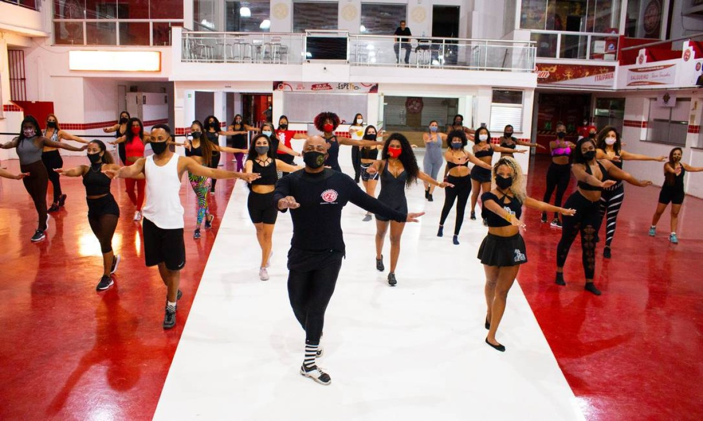
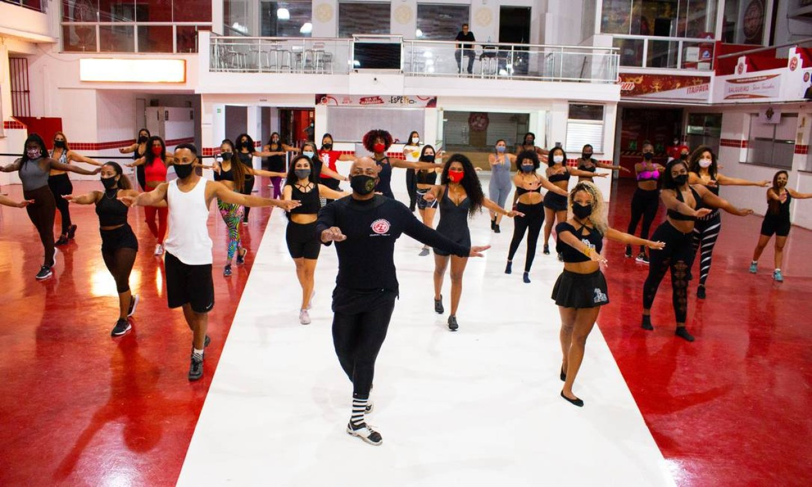

Levantando os seus ombros para cima e para baixo, você ativa a musculatura dos braços e tronco, se preparando para se exercitar. Mesmo quando não se tem muito espaço, o aquecimento antes da dança não pode ficar de fora do seu ritual. Assim, a movimentação no lugar é uma excelente alternativa para preparar o seu corpo.
1- Samba.
2- Funk.
3- Zumba.
4- Balé clássico.
5- Dança do ventre.
6- Dança africana.
7- Dança de salão.
A dica é dançar cerca de 30 minutos por pelo menos três vezes por semana, isso ajudará a aumentar a frequência cardíaca e respiratória, e o crescimento da carga de disposição e energia.
 
